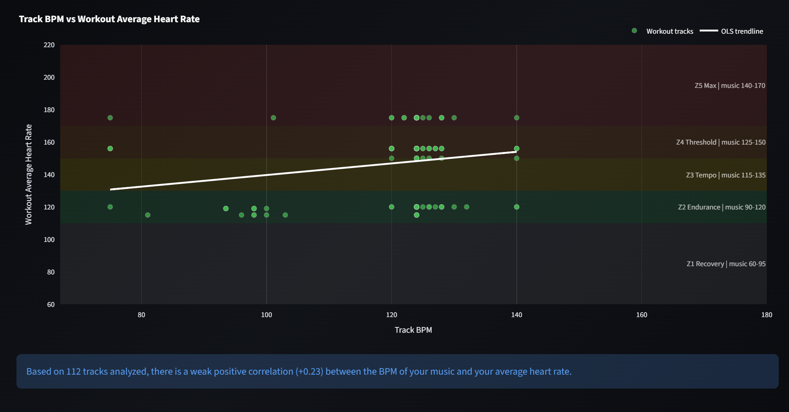
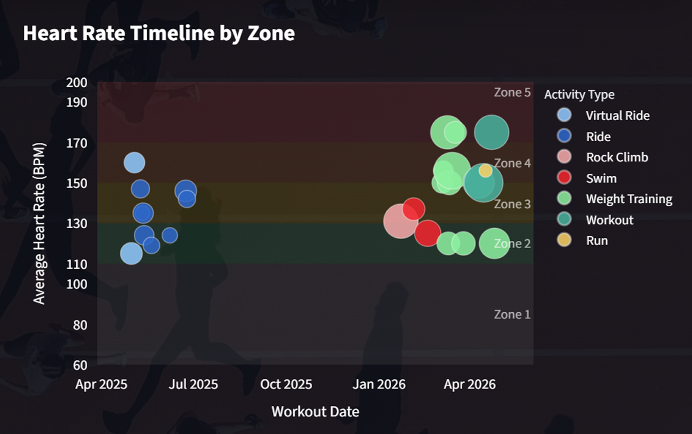
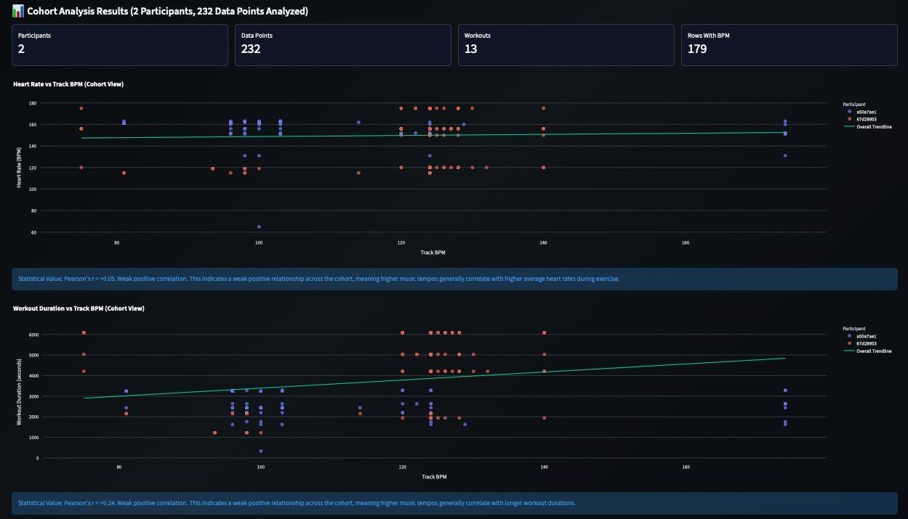

Spotify + Strava connected product
sync&
sweat
A music suggestion system shaped by the data that disproved its first assumption.
View project source
Starting hypothesis
Can a beat guide a body into the right heart-rate zone?
The obvious product story was simple: faster music raises heart rate, so the system should prescribe tempo. We treated that as a question, not a promise.
We explored whether Spotify listening behavior and Strava workout data could support a personalized music suggestion system for training and recovery.
The design challenge was not only to find a pattern. It was to decide which patterns were strong enough to become product behavior, and which claims the interface should refuse to make.
- SignalTrack BPM
Tempo might relate to workout intensity.
- ResponseHeart rate
Strava data makes effort visible over time.
- ContextActivity
Running, riding, and social sessions may behave differently.
Build the evidence
Align two personal histories before drawing a conclusion.
Listening history and track timestamps
Workout windows, activity type, and heart rate
BPM, energy, valence, and danceability
Tracks aligned to workouts by timestamp

That drop mattered. The interface had to make missing and uneven data visible instead of smoothing it into false certainty.

The useful failure
Tempo was not the lever we expected.
A weak positive relationship between BPM and average heart rate.

Once activity type was separated, the relationship nearly disappeared.
r = +0.05 Tempo did not explain heart rate across running, riding, walking, and other sessions.
Can music support sustained engagement instead of directly controlling physiology?
We shifted from a causal product claim to a contextual one. Workout duration became a proxy for continued engagement, and activity type became a required session input.

Product boundary
Design for solo training, where music has a job to do.
The activity timeline revealed a factor no acoustic feature could explain: social context.
Interviews showed that music was often absent during group sessions because conversation and shared pace replaced it. A universal workout companion would ignore the moment when the product was least useful.
We narrowed the product to solo sessions and defined activity type as a dynamic input, selected by the user or inferred from connected activity data.

Music can support focus, pacing, and motivation.
Social interaction already carries the experience. The system steps back.
- Real-time heart rate
- Activity type
- Track BPM, energy, and valence
- Personal Spotify workout history

Follow the Beat
Turn analysis into a decision someone can understand mid-workout.
- ConnectBring personal history in
Spotify and Strava create a participant-specific baseline.
- SenseRead the live zone
Heart rate and activity type locate the current session context.
- SuggestOffer one track
The interface explains why the recommendation fits now.
- ReflectCapture feedback
Post-session response helps the system learn what BPM cannot show.
Suggested because this track appears often in your solo rides and matches your current zone.
The language states the evidence the system has. It does not claim the song will control the body.
Evaluation and limits
A credible next step is more valuable than a dramatic claim.

No useful direct relationship in the small cohort.
A modest signal worth testing as engagement, not causation.
What the study changed
- Music was described as a mental and motivational aid more often than a direct physiological control.
- Track choice was habitual and mood-driven, not a conscious effort to match heart-rate zones.
- BPM, energy, and valence missed lyrics, memory, and personal hype, so future calibration needs self-reported mood.
What the study cannot claim
- The sample is too small for generalization.
- Photo and reflection inputs had low natural engagement.
- Interviews arrived late and real-time algorithm testing remained partial.
The product became stronger when it stopped promising that tempo controls heart rate and started explaining how personal data could support a better choice.
Return to selected work